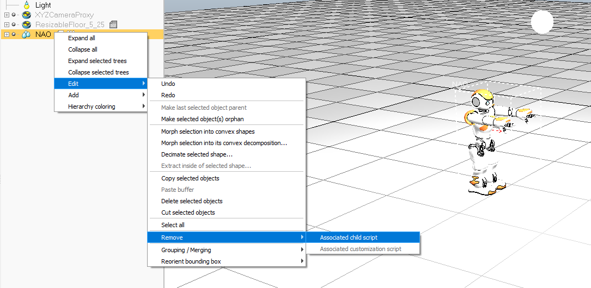
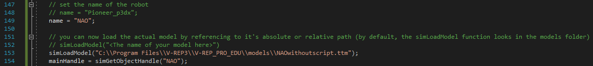
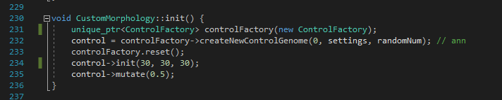
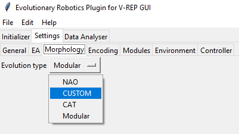
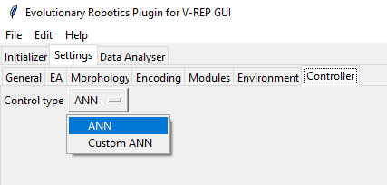

Evolving a custom morphology
You can evolve any robot model that can be simulated in V-REP. To do this, you'll have to modify the "CustomMorphology.cpp" file. The plugin will load this custom morphology and automatically identify all the joints in the robot. The output of the controller is also automatically connected to the joints and sets the target position for each joint (using "simSetJointTargetPosition"). The following example will show you how you can use the NAO robot in V-REP and evolve it. Note that how the controller and the fitness function is set up, it is unlikely that a useful behavior will evolve. It requires some tweaking of the fitness function and controllers.
Load the NAO robot in V-REP.
Remove all associated child scripts from the NAO robot as displayed in the image below.

Do the same for the jointRecorder object (press the + next to the NAO object to see all the objects in the tree hierarchy).
The model can now be saved by selecting the base part of the model and going to "File->Save model as...". I saved this model file in the files folder with the name "NAOwithoutscript.ttm".
When loading a custom morphology you can use the function simLoadModel as shown below.
The absolute path can also be changed to a relative path (e.g. "models\\NAOwithoutsctipt.ttm")

When evolving a custom morphology, make sure that the initial number of neurons equates the number of inputs and outputs. In the "init" function of the CustomMorphology (see image below)
you can see in line 234 that the controller is being initialized. By default this is used for an artificial neural network and the three arguments are:
the number of input neurons, the number of interneurons and the number of output neurons.

You can now evolve the robot by selecting "CUSTOM" in the morphology tab of the GUI:

Make sure that the controller is set to "ANN" and not to "Custom ANN" since the Custom ANN is not working yet.
